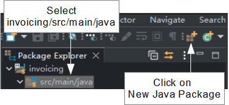
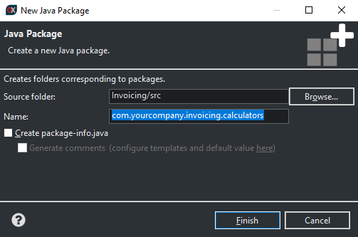
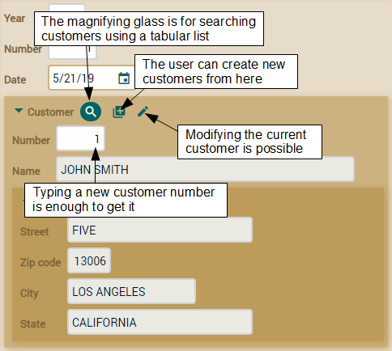
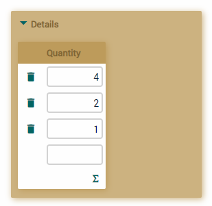
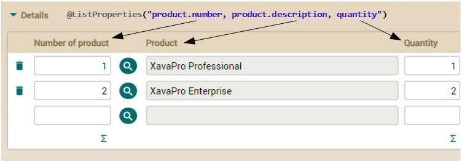
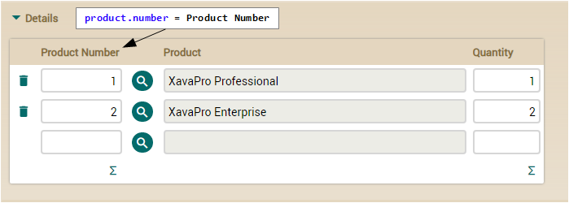

If you don't like videos follow the instructions below.
Calculating default values
We're going to write our Invoice entity with year, number and date. It would be nice to have default values for these properties, so the user does not have to type them. It's easy to do it using the @DefaultValueCalculator annotation. In this first version of Invoice you can see how we define default values for year and date:
package com.yourcompany.invoicing.model;
import java.time.*;
import javax.persistence.*;
import org.hibernate.annotations.GenericGenerator;
import org.openxava.annotations.*;
import org.openxava.calculators.*;
import lombok.*;
@Entity @Getter @Setter
public class Invoice {
@Id
@GeneratedValue(generator="system-uuid")
@Hidden
@GenericGenerator(name="system-uuid", strategy="uuid")
@Column(length=32)
String oid;
@Column(length=4)
@DefaultValueCalculator(CurrentYearCalculator.class) // Current year
int year;
@Column(length=6)
int number;
@Required
@DefaultValueCalculator(CurrentLocalDateCalculator.class) // Current date
LocalDate date;
@TextArea
String remarks;
}
Thus when the user clicks on the New button the year field will have the current year, and the date field the current date. These two calculators (CurrentYearCalculator and CurrentLocalDateCalculator) are included in OpenXava. You can explore the org.openxava.calculators package to see other useful built-in calculators.
Note that for the date we use the type LocalDate (from java.time package). Java has a type Date (in java.util package). However Date is not a date, but a moment in time, including hours, seconds and milliseconds, while LocalDate has just day, month and year, that is a date. For the invoice case, and for most cases in business applications, we'll use LocalDate over Date.
Sometimes you need your own logic for calculating the default value. For example, for number we want to add one to the last invoice number in the same year. Creating your own calculator with your logic is easy. First, create a package for calculators and call it com.yourcompany.invoicing.calculators.
For create a new package select the invoicing/src/main/java folder and click on the New Java Package button:

It shows a dialog where you enter the package name, com.yourcompany.invoicing.calculators, and click on Finish:

Packages are the way has Java to organize the code. You should change com.yourcompany by the domain of your organization, that is if you work for Google the package for calculators should be com.google.invoicing.calculators.
Then create in it a NextNumberForYearCalculator class, with the next code:
package com.yourcompany.invoicing.calculators;
import javax.persistence.*;
import org.openxava.calculators.*;
import org.openxava.jpa.*;
import lombok.*;
public class NextNumberForYearCalculator implements ICalculator { // A calculator must implement ICalculator
@Getter @Setter // To be publicly accessible
int year; // This value will be injected before calculating
public Object calculate() throws Exception { // It does the calculation
Query query = XPersistence.getManager() // A JPA query
.createQuery("select max(i.number) from Invoice i where i.year = :year"); // The query returns
// the max invoice number of the indicated year
query.setParameter("year", year); // We use the injected year as a parameter for the query
Integer lastNumber = (Integer) query.getSingleResult();
return lastNumber == null ? 1 : lastNumber + 1; // Returns the last invoice number
// of the year + 1 or 1 if there is no last number
}
}
Your calculator must implement
ICalculator interface (and therefore must have a
calculate() method). We declare a
year property to put in the year of the calculation. To implement the logic we use a JPA query. You can learn how to use JPA in
appendix B. Now we only have to annotate the number
property in the
Invoice entity:
@Column(length=6)
@DefaultValueCalculator(value=NextNumberForYearCalculator.class,
properties=@PropertyValue(name="year") // To inject the value of year from Invoice to
// the calculator before calling to calculate()
)
int number;
In this case you see something new, an annotation
@PropertyValue. By using this annotation you're saying that the value of
year property of the current
Invoice will be moved to the property
year of the calculator before doing the calculation. Now when ever the user clicks on
New the next invoice number is available for the year field. The way of calculating the invoice number is not the best for many concurrent users adding invoices. Don't worry, we'll improve this issue later on.
This is the visual effect of the default value calculators:

Default values are only the initial values. The user can change them if he wishes to.
Note as
year and
number are not key, instead we use an
oid property as key (annotated with
@Id). Generally using single keys is better, however
using composite keys is also possible.
Regular reference (ManyToOne)
Now that we have all atomic properties ready to use it's time to add relationships with other entities. We'll begin adding a reference from
Invoice to
Customer, because an invoice without customer is not very useful. Before adding the customer
use the Invoice module to remove all the current invoices because we're going to make the customer required, so the old data could fail.
Add the next code to the
Invoice entity:
@ManyToOne(fetch=FetchType.LAZY, optional=false) // Customer is required
Customer customer;
Nothing more is required. The
Invoice module is now like this one:

There is no more work left here now. Let's add the collection of details to your
Invoice.
Collection of dependent objects
Usually an invoice needs to have a couple of lines with the details of products, quantities, etc. These details are part of the invoice. They are not shared with other invoices, and when an invoice is deleted its details are also deleted. So, the more natural way of modeling the invoice details is to use a collection of embeddable objects. To do it with JPA, declare in
Invoice a regular collection annotated with
@ElementCollection:
@ElementCollection
Collection<Detail> details;
Using @ElementCollection when the invoice is removed its details are removed too. The details are not saved in the database until the invoice is saved and they are saved all at once.
In order to make this collection works you need to write the Detail class:
package com.yourcompany.invoicing.model;
import javax.persistence.*;
import lombok.*;
@Embeddable @Getter @Setter
public class Detail {
int quantity;
@ManyToOne(fetch = FetchType.LAZY, optional = true)
Product product;
}
Note that Detail is annotated with @Embeddable not with @Entity, you cannot define an @ElementCollection of entities. This @Embeddable class can contain properties and references but not collections.
At the moment we only have quantity and product and that is enough to get the Invoice running with details. The user can add, edit and remove elements from the collection just as in a spreadsheet:

This screenshot emphasizes that the properties to show by default in a collection are the plain ones, that is the properties of references are not included by default. This fact produces an ugly user interface for our collection of invoice details, because only the quantity property is shown. You can fix it using @ListProperties, in this way:
@ElementCollection
@ListProperties("product.number, product.description, quantity")
Collection<Detail> details;
As you can see, you only have to feed the value for the annotation @ListProperties with the list of the properties you wish, separated by commas. You can use qualified properties, that is, to use the dot notation for accessing properties of references, such as product.number and product.description in this case. The visual result is:

Now we realize that we don't like the product.number property's label, so we want to change this to: Product Number. To achieve this, we must go to the file invoicing-labels_en.properties that is located in the folder invoicing/src/main/resources/i18n and add the following line to overwrite the default label that OpenXava brings us:
product.number = Product Number

This new label
product.number will change in all modules that is used, in case that we want to use it only in collection details of Invoice entity, we should use the following label:
//For this application we will use the previous label and not the following one
Invoice.details.product.number= Product Number
In this way, we can customize the labels that OpenXava brings us or create our own labels.
Summary
Congratulations! You have finished your domain model classes, and you have an application running. Now the user can work with products, categories, customers and even create invoices. In the case of products, categories and customers the user interface is pretty decent, though the user interface for invoices still can be improved a little. By the way, you already have used some OpenXava annotations for refining the presentation, such as
@DescriptionsList, @NoFrame and
@ListProperties, also we saw how to modify labels that OpenXava brings us by default. In the next lesson we'll use more of these annotations to give the
Invoice user interface a better look without too much effort.